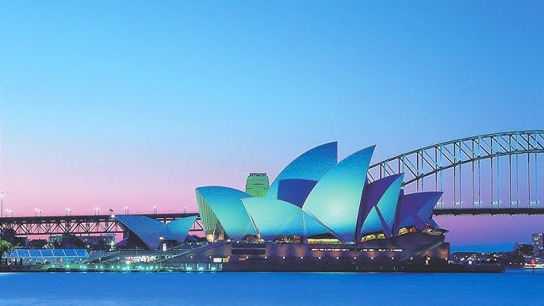

𝒪𝓅ℯ́𝓇𝒶 𝒹ℯ 𝒮𝓎𝒹𝓃ℯ𝓎 , 𝒜𝓊𝓈𝓉𝓇𝒶𝓁𝒾ℯ
L'opéra de Sydney (en anglais : Sydney Opera House), à Sydney (Nouvelle-Galles du Sud, Australie), est l'un des plus célèbres bâtiments du XXe siècle et un haut lieu de représentation des arts notamment lyriques. Son architecture originale, qui ressemble à un voilier pour les uns, ou à un coquillage pour les autres, a été imaginée par le Danois Jørn Utzon. Situé dans le port de Sydney, à Bennelong Point, il est entouré d'un parc boisé au sud et est voisin du célèbre pont Harbour Bridge d'une seule arche. Le paysage qui en résulte est devenu un symbole de l'Australie et de Sydney particulièrement. L'opéra est aujourd'hui une attraction touristique majeure de la ville bien que la plupart des visiteurs n'aient pas l'occasion d'assister à une représentation. Siège de l'Opéra d'Australie, de la Compagnie de théâtre de Sydney et de l'Orchestre symphonique de Sydney, l'Opéra accueille également beaucoup de productions artistiques étrangères en tournée. Il est administré par le Opera House Trust, structure régie par le ministère des Arts de la Nouvelle-Galles du Sud.L'Opéra de Sydney accueille environ 1 500 spectacles chaque année et abrite cinq théâtres, cinq studios de répétition, deux grands halls d'entrée, quatre restaurants, six bars et de multiples magasins de souvenirs. Les cinq salles ou théâtres sont : la grande salle de concert (Concert Hall) : 2 679 sièges. Elle contient le grand orgue de l'Opéra de Sydney, le plus grand orgue mécanique du monde (plus de 10 000 tuyaux) ; l'opéra officiellement renommé Joan Sutherland Theatre : 1 547 sièges. C'est lui qui accueille les représentations de l'Opéra d'Australie ; la salle de théâtre (Drama Theatre) : 544 sièges ; une plus petite salle de théâtre (Playhouse) : 398 sièges ; le studio de théâtre (The Studio) : 364 sièges.
Opéra de Sydney ...!
